Lesson 24 · Part 2 · Your workbench · 5 questions
Review before git
Read first: Make the agent prove it works, Subagents and orchestration
The agent that wrote the code is the worst reviewer of it, because it reads what it meant to write. Before anything reaches git, let scripts block the mechanical mistakes, let a fresh reviewer read only the diff and your team's rules, and save the human for what's left: intent, design and risk.
The idea
Proofread your own email and you read what you meant to say. The missing "not" slips past, because your head fills it in. A colleague who wasn't in your head catches it in five seconds.
An agent has the same blind spot, only stronger. Its context holds its plan, its reasoning and every file it opened, so when you ask "review your changes" in the same session, it checks the code against the story it already believes. Claude Code's own best-practice guide puts it this way: a review by a fresh subagent "isn't swayed by the reasoning that produced the code".
So review happens in layers, cheapest first, before git and before a human:
- Scripts first. The formatter, the lint rules and architecture tests from Turn unwritten rules into checks, and
./verifyfrom Make the agent prove it works. Anything a program can decide never reaches a reviewer. - A fresh reviewer. A new agent with no memory of the session reads the diff and a short file of review rules, and returns a few findings.
- The author answers. The writing agent fixes each finding or replies with a reason. Findings are advice, not orders.
- The human reviews what's left: is this the right change, is the design sound, what could go wrong in production?

Up close
Three choices make a reviewer useful rather than noisy.
A fresh context. The reviewer must not share the author's conversation. A subagent (see Subagents and orchestration) or a separate claude -p run both start clean. Claude Code ships one too: /code-review reviews your branch's changes in a background subagent that never saw your conversation, and follows your CLAUDE.md files.
The diff, not the repo. Start the reviewer from git diff --staged (the changes you're about to commit). A diff is small, so the review is quick and cheap, and every finding is about this change, not a three-year-old file. That was the lesson Facebook learned with its Infer analyser (see the fact below). The trade-off: a diff hides the callers of what changed. Let the reviewer follow them with read-only tools, or rely on the tests.
Rules, not taste. A reviewer asked to find problems will find some. Claude Code's guide warns about exactly this: "A reviewer that's asked to find problems will always find something", and if you fix every finding "you end up with extra abstraction layers and tests for cases that can't happen". So give it your team's list of what matters, and tell it what to skip. A short REVIEW.md at the repo root:
# Review rules
Report only what breaks behaviour,
loses money or data, or blocks a
rollback. Format and lint already
passed: no style comments.
Always check:
- Amounts are integer minor units
- Kafka consumers are idempotent:
a redelivered message is a no-op
- Migrations work while the old
version of the code still runs
- Payment provider calls go
through src/lib/psp
Each finding: file:line, the rule
or bug, and why it matters.
Nothing found? Say "LGTM".Any file name works for your own reviewer. REVIEW.md is a good choice, because Anthropic's managed Code Review service for GitHub pull requests reads a file by that name for review-only rules. The local /code-review command reads your CLAUDE.md files and ignores it.
The gate before git
Checks that must pass before a commit belong in git's pre-commit hook, which runs for you and for the agent alike. Keep it in the repo and point git at it, so the whole team gets it:
#!/bin/bash
# .githooks/pre-commit: runs before
# every commit; non-zero = no commit
set -e
ruff format --check .
ruff check .
pytest -q tests/test_architecture.pyTurn it on once per clone with git config core.hooksPath .githooks and it runs from then on.
Two rules keep the gate honest:
- Blocking checks are programs. They answer yes or no the same way every time. The reviewer's findings are sampled (see How the next token is chosen): run it twice and you get a slightly different list. That is fine for advice, and bad for a gate that refuses commits.
- Keep it fast. A gate that takes ten minutes gets skipped, so keep this hook to seconds.
./verifyalready runs in theStophook, and the full suite runs in CI, which no one can skip.
Worked example
One diff adds a Kafka consumer that issues refunds. Five problems hide in it. Who catches each?
| Problem | Caught by |
|---|---|
| Import order, quote style | Formatter, in a hook |
| Raw HTTP to the payment provider | Lint rule, before commit |
| Rounds 9.995 the wrong way | A new test in ./verify |
| A redelivered message refunds twice | Fresh reviewer, from REVIEW.md |
| Ticket asked for partial refunds; this refunds in full | Human: only they know the intent |
The human still reads the PR, but now with the evidence and the reviewer's findings beside the diff, and with their attention on the last row instead of the first.
At your laptop
Write a reviewer that sees only the staged diff and your rules. A plain script, so you and the agent run it the same way:
#!/bin/bash
# review: fresh eyes on the staged
# diff, before you commit
set -euo pipefail
diff=$(git diff --staged)
if [ -z "$diff" ]; then
echo "nothing staged"; exit 0
fi
{ cat REVIEW.md
echo "== STAGED DIFF"
echo "$diff"
} | claude -p --tools "" \
"You didn't write this code.
Review the diff against the rules
above. At most 8 findings, worst
first. Don't rewrite the code."- A new process is a fresh context. It knows nothing about the session that wrote the code.
--tools ""removes every built-in tool, so it can't edit, run commands or wander off. It sees the piped text, plus your CLAUDE.md, which-ploads as usual.- To let it follow callers outside the diff, use
--tools "Read,Grep,Glob"instead. Still read-only.
Add one line to CLAUDE.md: "Before you commit, stage your changes, run ./review and fix each finding or answer it with a reason. Put both in the PR." Then test it: stage a consumer with no idempotency check and see whether the review catches it.
Your turn
Question 1 · ~2 min
The agent finishes a refund handler. You type "review your changes". It finds a typo in a log message and says the rest looks good. A reviewer started fresh on the same diff reports that a redelivered message refunds twice. Why did the first review miss it?
Show answer
The author reviewed its own story, not the code. Its context holds the plan it made, including "messages arrive once", so it read the code as doing what it meant. A fresh reviewer has only the diff and the rules, and "consumers are idempotent" is on the list. Research agrees: a 2024 ICLR paper, "Large Language Models Cannot Self-Correct Reasoning Yet", found that models asked to check their own answers without new information rarely improved them, and sometimes made them worse.
Question 2 · ~2 min
Your reviewer returns 14 findings: 11 about import order, quote style and line length, 3 about logic. A week later nobody reads its output. What went wrong, and what's the fix?
Show answer
It did the formatter's job, and the noise buried the real findings. Style is decided by a program, so it never needs a reviewer. Run the formatter and linter in a hook before the review, and tell the reviewer "format and lint already passed: no style comments". If it keeps raising the same thing, that's a rule waiting to become a check.
Question 3 · ~2 min
A diff changes refund_amount() to return pounds instead of pence. Your tool-less reviewer says LGTM. Three callers, none in the diff, now refund a hundred times too little. What was missing?
Show answer
The reviewer couldn't see the callers. A diff shows what changed, not who depends on it. Give it read-only tools such as Read and Grep so it can search for callers, and say in REVIEW.md "for any changed signature or unit, check every caller". Better still, make units part of the type, so the compiler or a test catches it before any reviewer.
Question 4 · ~3 min
The reviewer flags "possible null order in refund()". The type and the database column both forbid null. The writing agent adds a null check and a test for it anyway. Harmless?
Hint
Show answer
Each one is small; together they rot the code. Checks and tests for impossible cases make the code longer and suggest to the next reader that null can happen. A reviewer's finding is advice from a model that can be wrong. Tell the author to fix a finding or answer it with a reason, here "the type forbids null", and put both in the PR so the human sees the argument.
Question 5 · ~3 min
Stretch: your pre-commit hook fails on a lint error. The agent runs git commit -n -m "wip" and the commit goes through. You had a deny rule for --no-verify in Bash commands. What happened, and what actually holds?
Hint
Show answer
-n is the short form of --no-verify, which skips the pre-commit hook, and your rule matched only the long spelling. As Hooks and permissions showed, a rule on command text catches the usual spellings, never all of them. Add a rule for -n too, and say in CLAUDE.md "never skip hooks; ask". What actually holds is the same checks in CI with branch protection, where the agent can't reach them.
Interesting fact: Near silence, then 70%
Infer is a static analyser that grew out of academic research on separation logic. Its startup, Monoidics, was bought by Facebook in 2013, and Infer was open-sourced in 2015. Its first deployment at Facebook ran once a night on the whole Android codebase and produced a list of issues, which the team assigned by hand to the engineers best placed to fix them. "The response was stunning," the team later wrote: "we were greeted by near silence." They had worked to get false positives under 20%, yet the fix rate was near zero. Then they switched Infer to "diff time": it ran on each code change and commented in code review, like a bot. The fix rate "rocketed to over 70%", with the same analysis and the same false positive rate. Engineers explained why: a report on the change in front of you needs no context switch, and it is almost certainly yours to fix. The team added that timing matters, because a bot that takes an hour or more on a diff "could be too late". A reviewer is worth most on the diff, while the author is still there.
Facts checked: November 2026 (Claude Code docs: best practices, /code-review, Code Review REVIEW.md, CLI reference, tools reference; git manuals: git-commit, githooks; Huang et al., ICLR 2024; Distefano et al., "Scaling Static Analyses at Facebook", CACM, August 2019).
Answers
- Question 1
The author reviewed its own story, not the code. Its context holds the plan it made, including "messages arrive once", so it read the code as doing what it meant. A fresh reviewer has only the diff and the rules, and "consumers are idempotent" is on the list. Research agrees: a 2024 ICLR paper, "Large Language Models Cannot Self-Correct Reasoning Yet", found that models asked to check their own answers without new information rarely improved them, and sometimes made them worse.
- Question 2
It did the formatter's job, and the noise buried the real findings. Style is decided by a program, so it never needs a reviewer. Run the formatter and linter in a hook before the review, and tell the reviewer "format and lint already passed: no style comments". If it keeps raising the same thing, that's a rule waiting to become a check.
- Question 3
The reviewer couldn't see the callers. A diff shows what changed, not who depends on it. Give it read-only tools such as
ReadandGrepso it can search for callers, and say in REVIEW.md "for any changed signature or unit, check every caller". Better still, make units part of the type, so the compiler or a test catches it before any reviewer. - Question 4
Each one is small; together they rot the code. Checks and tests for impossible cases make the code longer and suggest to the next reader that null can happen. A reviewer's finding is advice from a model that can be wrong. Tell the author to fix a finding or answer it with a reason, here "the type forbids null", and put both in the PR so the human sees the argument.
- Question 5
-nis the short form of--no-verify, which skips the pre-commit hook, and your rule matched only the long spelling. As Hooks and permissions showed, a rule on command text catches the usual spellings, never all of them. Add a rule for-ntoo, and say in CLAUDE.md "never skip hooks; ask". What actually holds is the same checks in CI with branch protection, where the agent can't reach them.